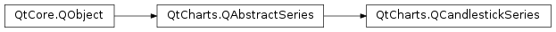

QtCharts.QCandlestickSeries¶
Note
This class was introduced in Qt 5.7.
Synopsis¶
Functions¶
- def
append(set) - def
append(sets) - def
bodyOutlineVisible() - def
bodyWidth() - def
brush() - def
capsVisible() - def
capsWidth() - def
clear() - def
count() - def
decreasingColor() - def
increasingColor() - def
insert(index, set) - def
maximumColumnWidth() - def
minimumColumnWidth() - def
pen() - def
remove(set) - def
remove(sets) - def
setBodyOutlineVisible(bodyOutlineVisible) - def
setBodyWidth(bodyWidth) - def
setBrush(brush) - def
setCapsVisible(capsVisible) - def
setCapsWidth(capsWidth) - def
setDecreasingColor(decreasingColor) - def
setIncreasingColor(increasingColor) - def
setMaximumColumnWidth(maximumColumnWidth) - def
setMinimumColumnWidth(minimumColumnWidth) - def
setPen(pen) - def
sets() - def
take(set)
Signals¶
- def
bodyOutlineVisibilityChanged() - def
bodyWidthChanged() - def
brushChanged() - def
candlestickSetsAdded(sets) - def
candlestickSetsRemoved(sets) - def
capsVisibilityChanged() - def
capsWidthChanged() - def
clicked(set) - def
countChanged() - def
decreasingColorChanged() - def
doubleClicked(set) - def
hovered(status, set) - def
increasingColorChanged() - def
maximumColumnWidthChanged() - def
minimumColumnWidthChanged() - def
penChanged() - def
pressed(set) - def
released(set)
Detailed Description¶
-
class
PySide2.QtCharts.QtCharts.QCandlestickSeries([parent=nullptr])¶ Parameters: parent – PySide2.QtCore.QObject
-
PySide2.QtCharts.QtCharts.QCandlestickSeries.append(sets)¶ Parameters: sets – Return type: PySide2.QtCore.bool
-
PySide2.QtCharts.QtCharts.QCandlestickSeries.append(set) Parameters: set – PySide2.QtCharts.QtCharts::QCandlestickSetReturn type: PySide2.QtCore.bool
-
PySide2.QtCharts.QtCharts.QCandlestickSeries.bodyOutlineVisibilityChanged()¶
-
PySide2.QtCharts.QtCharts.QCandlestickSeries.bodyOutlineVisible()¶ Return type: PySide2.QtCore.bool
-
PySide2.QtCharts.QtCharts.QCandlestickSeries.bodyWidth()¶ Return type: PySide2.QtCore.qreal
-
PySide2.QtCharts.QtCharts.QCandlestickSeries.bodyWidthChanged()¶
-
PySide2.QtCharts.QtCharts.QCandlestickSeries.brush()¶ Return type: PySide2.QtGui.QBrush
-
PySide2.QtCharts.QtCharts.QCandlestickSeries.brushChanged()¶
-
PySide2.QtCharts.QtCharts.QCandlestickSeries.candlestickSetsAdded(sets)¶ Parameters: sets –
-
PySide2.QtCharts.QtCharts.QCandlestickSeries.candlestickSetsRemoved(sets)¶ Parameters: sets –
-
PySide2.QtCharts.QtCharts.QCandlestickSeries.capsVisibilityChanged()¶
-
PySide2.QtCharts.QtCharts.QCandlestickSeries.capsVisible()¶ Return type: PySide2.QtCore.bool
-
PySide2.QtCharts.QtCharts.QCandlestickSeries.capsWidth()¶ Return type: PySide2.QtCore.qreal
-
PySide2.QtCharts.QtCharts.QCandlestickSeries.capsWidthChanged()¶
-
PySide2.QtCharts.QtCharts.QCandlestickSeries.clear()¶
-
PySide2.QtCharts.QtCharts.QCandlestickSeries.clicked(set)¶ Parameters: set – PySide2.QtCharts.QtCharts::QCandlestickSet
-
PySide2.QtCharts.QtCharts.QCandlestickSeries.count()¶ Return type: PySide2.QtCore.int
-
PySide2.QtCharts.QtCharts.QCandlestickSeries.countChanged()¶
-
PySide2.QtCharts.QtCharts.QCandlestickSeries.decreasingColor()¶ Return type: PySide2.QtGui.QColor
-
PySide2.QtCharts.QtCharts.QCandlestickSeries.decreasingColorChanged()¶
-
PySide2.QtCharts.QtCharts.QCandlestickSeries.doubleClicked(set)¶ Parameters: set – PySide2.QtCharts.QtCharts::QCandlestickSet
-
PySide2.QtCharts.QtCharts.QCandlestickSeries.hovered(status, set)¶ Parameters: - status –
PySide2.QtCore.bool - set –
PySide2.QtCharts.QtCharts::QCandlestickSet
- status –
-
PySide2.QtCharts.QtCharts.QCandlestickSeries.increasingColor()¶ Return type: PySide2.QtGui.QColor
-
PySide2.QtCharts.QtCharts.QCandlestickSeries.increasingColorChanged()¶
-
PySide2.QtCharts.QtCharts.QCandlestickSeries.insert(index, set)¶ Parameters: - index –
PySide2.QtCore.int - set –
PySide2.QtCharts.QtCharts::QCandlestickSet
Return type: PySide2.QtCore.bool- index –
-
PySide2.QtCharts.QtCharts.QCandlestickSeries.maximumColumnWidth()¶ Return type: PySide2.QtCore.qreal
-
PySide2.QtCharts.QtCharts.QCandlestickSeries.maximumColumnWidthChanged()¶
-
PySide2.QtCharts.QtCharts.QCandlestickSeries.minimumColumnWidth()¶ Return type: PySide2.QtCore.qreal
-
PySide2.QtCharts.QtCharts.QCandlestickSeries.minimumColumnWidthChanged()¶
-
PySide2.QtCharts.QtCharts.QCandlestickSeries.pen()¶ Return type: PySide2.QtGui.QPen
-
PySide2.QtCharts.QtCharts.QCandlestickSeries.penChanged()¶
-
PySide2.QtCharts.QtCharts.QCandlestickSeries.pressed(set)¶ Parameters: set – PySide2.QtCharts.QtCharts::QCandlestickSet
-
PySide2.QtCharts.QtCharts.QCandlestickSeries.released(set)¶ Parameters: set – PySide2.QtCharts.QtCharts::QCandlestickSet
-
PySide2.QtCharts.QtCharts.QCandlestickSeries.remove(sets)¶ Parameters: sets – Return type: PySide2.QtCore.bool
-
PySide2.QtCharts.QtCharts.QCandlestickSeries.remove(set) Parameters: set – PySide2.QtCharts.QtCharts::QCandlestickSetReturn type: PySide2.QtCore.bool
-
PySide2.QtCharts.QtCharts.QCandlestickSeries.setBodyOutlineVisible(bodyOutlineVisible)¶ Parameters: bodyOutlineVisible – PySide2.QtCore.bool
-
PySide2.QtCharts.QtCharts.QCandlestickSeries.setBodyWidth(bodyWidth)¶ Parameters: bodyWidth – PySide2.QtCore.qreal
-
PySide2.QtCharts.QtCharts.QCandlestickSeries.setBrush(brush)¶ Parameters: brush – PySide2.QtGui.QBrush
-
PySide2.QtCharts.QtCharts.QCandlestickSeries.setCapsVisible(capsVisible)¶ Parameters: capsVisible – PySide2.QtCore.bool
-
PySide2.QtCharts.QtCharts.QCandlestickSeries.setCapsWidth(capsWidth)¶ Parameters: capsWidth – PySide2.QtCore.qreal
-
PySide2.QtCharts.QtCharts.QCandlestickSeries.setDecreasingColor(decreasingColor)¶ Parameters: decreasingColor – PySide2.QtGui.QColor
-
PySide2.QtCharts.QtCharts.QCandlestickSeries.setIncreasingColor(increasingColor)¶ Parameters: increasingColor – PySide2.QtGui.QColor
-
PySide2.QtCharts.QtCharts.QCandlestickSeries.setMaximumColumnWidth(maximumColumnWidth)¶ Parameters: maximumColumnWidth – PySide2.QtCore.qreal
-
PySide2.QtCharts.QtCharts.QCandlestickSeries.setMinimumColumnWidth(minimumColumnWidth)¶ Parameters: minimumColumnWidth – PySide2.QtCore.qreal
-
PySide2.QtCharts.QtCharts.QCandlestickSeries.setPen(pen)¶ Parameters: pen – PySide2.QtGui.QPen
-
PySide2.QtCharts.QtCharts.QCandlestickSeries.sets()¶ Return type:
-
PySide2.QtCharts.QtCharts.QCandlestickSeries.take(set)¶ Parameters: set – PySide2.QtCharts.QtCharts::QCandlestickSetReturn type: PySide2.QtCore.bool
© 2018 The Qt Company Ltd. Documentation contributions included herein are the copyrights of their respective owners. The documentation provided herein is licensed under the terms of the GNU Free Documentation License version 1.3 as published by the Free Software Foundation. Qt and respective logos are trademarks of The Qt Company Ltd. in Finland and/or other countries worldwide. All other trademarks are property of their respective owners.